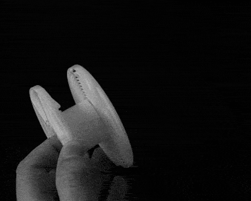
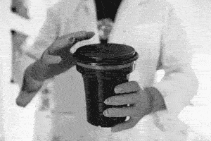

Before starting, consult the individual instructions included with your chemistry. Individual powder or liquid kits will need to be mixed according to their specific instructions for proper use.
Fill your Pot/Tub/Sink with hot water. The Chemistry will need to reach a temp of 102 F or 38.9 C. To do this, the bottles of Developer and Blix can be placed in the tub of hot water until they have reached the proper temp.
Tip: you can use an immersion circulator/cooker (sous vide) or other water heating device to regulate the water's temperature and keep it at the required temp throughout the process.
For this step, the process must take place in total darkness. Your film is undeveloped, so any light will destroy the images on the roll at this stage. I recommend wearing nitrile gloves for this step so that your film doesn't pick up any fingerprints.
First, the film must be removed from its canister. This can be done a number of ways such as: popping the top with a bottle opener, prying the side apart at the opening, or retrieving the film leader using another strip of film or the leader attached to an unused roll of film.
Here are some videos going over the different ways to remove film from its cassette.
Note: Do not fully unravel the film, you don't want it to get twisted, bent, or scratched.
Once you have retrieved the leader of the film, carefully cut it off using your scissors. Watch your fingers and don't cut it too far from the end or you may lose your first frame.
You can now begin loading the film onto the spool included with your tank/drum.
Place the film so that the edges line up with the first groove on the spool and pull it through a couple inches.
Once the film is in place, begin turning one side of the spool back and forth. There are small ball bearings on either side of the film that allow it to be loaded using a ratcheting motion.
Once you reach the end of the film, cut the very end where it is attatched to the remaning portion of the cassette.
Now you can put the spool onto the center column of the tank. Then put the lid and light-trap/locking funnel on and lock it into place.
You can now turn on the lights and/or move to the location where your chemistry is heating up.
Before starting the actual process, its often beneficial to pre-soak your film. To do this, fill your tank with water that is within 5 degrees of the 102 F used when processing.
Agitate the water a little bit and let it soak for exactly 1 minute.
After one minute, dump out the water.
Begin pouring your developer into the tank and start a timer for 3.5 minutes. Agitate continuously for the first 10-15 seconds.
Put on the tank lid and make sure there are no leaks (you don't want that stuff spraying everywhere).
Invert the tank 4 times every 30 seconds. An inversion looks like this:
Once 3.5 minutes is up, use a funnel and pour the developer back into its container.
For the Blix, your will be doing exactly what you did with the developer. However, this time it will be for 6.5 minutes.
Put on the tank lid and make sure there are no leaks (the BL in blix stands for Bleach, so you really want to make sure this is sealed up).
Invert the tank 4 times every 30 seconds.
Once 6.5 minutes is up, use a funnel and pour the blix back into its container.
Tip: The lid on the tank will most likely begin bulging or swelling throughout this process. This is due to the pressure building up from the agitation of the blix. When this happens, it is best to lightly lift part of the lid to "burp" the tank.
Now that your film has been fixed, it is no longer sensitive to light and the funnel and lid can be removed from the tank.
Place the open tank under running water at 95-105 degrees F.
Let the water run for 3 minutes.
After 3 minutes, dump out the water.
Pour your stabilizer into the tank and agitate for 15 seconds.
After sitting for 30 seconds to 1 minute, use a funnel and pour the stabilizer back into its container.
The stabilizer only needs to be at room temp.
After gently removing the your film from the spool, hang it up in a cool place. You can use a clothespin or really any other clip (I like to use a coat-hanger with those little metal clips for holding pants)
You should also add some clips to the bottom of the strip, this weight will help avoid curling or warping of the film.
Once your film is dry you can cut the negatives into strips and scan, print, and share your pictures.